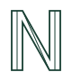
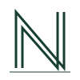
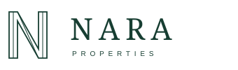

Three original studies in structure, negative space, and the letter N. The selected direction balances architectural precision with the lightness of a contemporary luxury brand.

Slender parallel strokes connect two vertical forms. A distinctive, recognisable N with enough openness to become architecture in motion.

A structural frame and grounded baseline. More formal and monumental, suited to signage and architectural applications.
A solid silhouette with a slender companion line. Bold at small sizes, with a more assertive expression.

